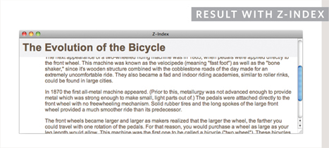

15
LAYOUT
- Controlling the position of elements
- Creating site layouts
- Designing for different sized screens
In this chapter we are going to look at how to control where each element sits on a page and how to create attractive page layouts.
This involves learning about how designing for a screen can be different to designing for other mediums (such as print). In this chapter we will:
- Explore different ways to position elements using normal flow, relative positioning, absolute positioning and floats.
- Discover how various devices have different screen sizes and resolution, and how this affects the design process.
- Learn the difference between fixed width and liquid layouts, and how they are created.
- Find out how designers use grids to make their page designs look more professional.
KEY CONCEPTS IN POSITIONING ELEMENTS
BUILDING BLOCKS
CSS treats each HTML element as if it is in its own box. This box will either be a block-level box or an inline box.
Block-level boxes start on a new line and act as the main building blocks of any layout, while inline boxes flow between surrounding text. You can control how much space each box takes up by setting the width of the boxes (and sometimes the height, too). To separate boxes, you can use borders, margins, padding, and background colors.

BLOCK-LEVEL ELEMENTS
START ON A NEW LINE
Examples include:
<h1> <p> <ul> <li>
INLINE ELEMENTS
FLOW IN BETWEEN SURROUNDING TEXT
Examples include:
<img> <b> <i>
CONTAINING ELEMENTS
If one block-level element sits inside another block-level element then the outer box is known as the containing or parent element.
It is common to group a number of elements together inside a <div> (or other block-level) element. For example, you might group together all of the elements that form the header of a site (such as the logo and the main navigation). The <div> element that contains this group of elements is then referred to as the containing element.
A box may be nested inside several other block-level elements. The containing element is always the direct parent of that element.
The orange lines in this diagram represent <div> elements. The header (containing the logo and navigation) are in one <div> element, the main content of the page is in another, and the footer is in a third. The <body> element is the containing element for these three <div> elements. The second <div> element is the containing element for two paragraphs of Latin text and images (represented by crossed squares).
CONTROLLING THE POSITION OF ELEMENTS
CSS has the following positioning schemes that allow you to control the layout of a page: normal flow, relative positioning, and absolute positioning. You specify the positioning scheme using the position property in CSS. You can also float elements using the float property.
NORMAL FLOW
Every block-level element appears on a new line, causing each item to appear lower down the page than the previous one. Even if you specify the width of the boxes and there is space for two elements to sit side-by-side, they will not appear next to each other. This is the default behavior (unless you tell the browser to do something else).
The paragraphs appear one after the other, vertically down the page.
See page 365
RELATIVE POSITIONING
This moves an element from the position it would be in normal flow, shifting it to the top, right, bottom, or left of where it would have been placed. This does not affect the position of surrounding elements; they stay in the position they would be in in normal flow.

The second paragraph has been pushed down and right from where it would otherwise have been in normal flow.
See page 366
ABSOLUTE POSITIONING
This positions the element in relation to its containing element. It is taken out of normal flow, meaning that it does not affect the position of any surrounding elements (as they simply ignore the space it would have taken up). Absolutely positioned elements move as users scroll up and down the page.

The heading is positioned to the top right, and the paragraphs start at the top of the screen (as if the heading were not there).
See page 367
To indicate where a box should be positioned, you may also need to use box offset properties to tell the browser how far from the top or bottom and left or right it should be placed. (You will meet these when we introduce the positioning schemes on the following pages.)
FIXED POSITIONING
This is a form of absolute positioning that positions the element in relation to the browser window, as opposed to the containing element. Elements with fixed positioning do not affect the position of surrounding elements and they do not move when the user scrolls up or down the page.

The heading has been placed in the center of the page and 25% from the top of the screen. (The rest appears in normal flow.)
See page 368
FLOATING ELEMENTS
Floating an element allows you to take that element out of normal flow and position it to the far left or right of a containing box. The floated element becomes a block-level element around which other content can flow.
The heading has been floated to the left, allowing the paragraphs of text to flow around it.
See page 370-376
When you move any element from normal flow, boxes can overlap. The z-index property allows you to control which box appears on top.
NORMAL FLOW
position:static
In normal flow, each block-level element sits on top of the next one. Since this is the default way in which browsers treat HTML elements, you do not need a CSS property to indicate that elements should appear in normal flow, but the syntax would be:
position: static;
I have not specified a width property for the heading element, so you can see how it stretches the width of the entire browser window by default.
The paragraphs are restricted to 450 pixels wide. This shows how the elements in normal flow start on a new line even if they do not take up the full width of the browser window.
All of the examples that demonstrate positioning will use a similar HTML structure.


RELATIVE POSITIONING
position:relative

Relative positioning moves an element in relation to where it would have been in normal flow.
For example, you can move it 10 pixels lower than it would have been in normal flow or 20% to the right.
You can indicate that an element should be relatively positioned using the position property with a value of relative.
You then use the offset properties (top or bottom and left or right) to indicate how far to move the element from where it would have been in normal flow.
To move the box up or down, you can use either the top or bottom properties.
To move the box horizontally, you can use either the left or right properties.
The values of the box offset properties are usually given in pixels, percentages or ems.
ABSOLUTE POSITIONING
position:absolute
When the position property is given a value of absolute, the box is taken out of normal flow and no longer affects the position of other elements on the page. (They act like it is not there.)
The box offset properties (top or bottom and left or right) specify where the element should appear in relation to its containing element.
In this example, the heading has been positioned at the top of the page and 500 pixels from its left edge. The width of the heading is set to be 250 pixels wide.
The width property has also been applied to the <p> elements in this example to prevent the text from overlapping and becoming unreadable.
By default, most browsers add a margin to the top of the <h1> element. This is why there is a gap between the top of the browser and the box containing the <h1> element. If you wanted to remove this margin, you could add the following code to the <h1> element's style rules:
margin: 0px;

FIXED POSITIONING
position:fixed

Fixed positioning is a type of absolute positioning that requires the position property to have a value of fixed.
It positions the element in relation to the browser window. Therefore, when a user scrolls down the page, it stays in the exact same place. It is a good idea to try this example in your browser to see the effect.
To control where the fixed position box appears in relation to the browser window, the box offset properties are used.
In this example, the heading has been positioned to the top left hand corner of the browser window. When the user scrolls down the page, the paragraphs disappear behind the heading.
The <p> elements are in normal flow and ignore the space that the <h1> element would have taken up. Therefore, the margin-top property has been used to push the first <p> element below where the fixed position <h1> element is sitting.
OVERLAPPING ELEMENTS
z-index
When you use relative, fixed, or absolute positioning, boxes can overlap. If boxes do overlap, the elements that appear later in the HTML code sit on top of those that are earlier in the page.
If you want to control which element sits on top, you can use the z-index property. Its value is a number, and the higher the number the closer that element is to the front. For example, an element with a z-index of 10 will appear over the top of one with a z-index of 5.
This example looks similar to the one on page 368, but it uses relative positioning for the <p> elements. Because the paragraphs are relatively positioned, by default they would appear over the top of the heading as the user scrolls down the page. To ensure that the <h1> element stays on top, we use the z-index property on the rule for the <h1> element.
The z-index is sometimes referred to as the stacking context (as if the blocks have been stacked on top of each other on a z axis). If you are familiar with desktop publishing packages, it is the equivalent of using the ‘bring to front’ and ‘send to back’ features.


FLOATING ELEMENTS
float

The float property allows you to take an element in normal flow and place it as far to the left or right of the containing element as possible.
Anything else that sits inside the containing element will flow around the element that is floated.
When you use the float property, you should also use the width property to indicate how wide the floated element should be. If you do not, results can be inconsistent but the box is likely to take up the full width of the containing element (just like it would in normal flow).
In this example, a <blockquote> element is used to hold a quotation. It's containing element is the <body> element.
The <blockquote> element is floated to the right, and the paragraphs that follow the quote flow around the floated element.
USING FLOAT TO PLACE ELEMENTS SIDE-BY-SIDE
A lot of layouts place boxes next to each other. The float property is commonly used to achieve this.
When elements are floated, the height of the boxes can affect where the following elements sit.
In this example, you can see six paragraphs, each of which has a width and a float property set.
The fourth paragraph does not go across to the left hand edge of the page as one might expect. Rather it sits right under the third paragraph.
The reason for this is that the fourth paragraph has space to start under the third paragraph, but it cannot go any further to the left because the second paragraph is in the way.
Setting the height of the paragraphs to be the same height as the tallest paragraph would solve this issue, but it is rarely suited to real world designs where the amount of text in a paragraph or column may vary. It is more common to use the clear property (discussed on the next page) to solve this issue.

CLEARING FLOATS
clear


The clear property allows you to say that no element (within the same containing element) should touch the left or right-hand sides of a box. It can take the following values:
left
The left-hand side of the box should not touch any other elements appearing in the same containing element.
right
The right-hand side of the box will not touch elements appearing in the same containing element.
both
Neither the left nor right-hand sides of the box will touch elements appearing in the same containing element.
none
Elements can touch either side.
In this example, the fourth paragraph has a class called clear. The CSS rule for this class uses the clear property to indicate that nothing should touch the left-hand side of it. The fourth paragraph is therefore moved further down the page so no other element touches its left-hand side.
PARENTS OF FLOATED ELEMENTS: PROBLEM
If a containing element only contains floated elements, some browsers will treat it as if it is zero pixels tall.
As you can see in this example, the one pixel border assigned to the containing element has collapsed, so the box looks like a two pixel line.


PARENTS OF FLOATED ELEMENTS: SOLUTION

Traditionally, developers got around this problem by adding an extra element after the last floated box (inside the containing element). A CSS rule would be applied to this additional element setting the clear property to have a value of both. But this meant that an extra element was added to the HTML just to fix the height of the containing element.
More recently, developers have opted for a purely CSS-based solution because it means that there is no need to add an extra element to the HTML page after the floated elements. The pure CSS solution adds two CSS rules to the containing element (in this example the <div> element):
- The overflow property is given a value auto.
- The width property is set to 100%.
CREATING MULTI-COLUMN LAYOUTS WITH FLOATS
Many web pages use multiple columns in their design. This is achieved by using a <div> element to represent each column. The following three CSS properties are used to position the columns next to each other:
width
This sets the width of the columns.
float
This positions the columns next to each other.
margin
This creates a gap between the columns.
A two-column layout like the one shown on this page would need two <div> elements, one for the main content of the page and one for the sidebar.
Inside each of the <div> elements there can be headings, paragraphs, images, and even other <div> elements.


Similarly, a three column layout could be created by floating three <div> elements next to each other, as shown on this page.
SCREEN SIZES
Different visitors to your site will have different sized screens that show different amounts of information, so your design needs to be able to work on a range of different sized screens.
iPhone 4
Size: 3.5 inches
Resolution: 960 × 640 pixels
iPad 2
Size: 9.7 inches
Resolution: 1024 × 768 pixels
When designing for print, you always know the size of the piece of paper that your design will be printed on. However, when it comes to designing for the web, you are faced with the unique challenge that different users will have different sized screens.
Since computers have been sold to the public, the size of screens has been steadily increasing. This means that some people viewing your site might have 13 inch monitors while others may have 27+ inch monitors.
The size of a user's screen affects how big they can open their windows and how much of the page they will see. There are also an increasing number of handheld devices (mobile phones and tablets) that have smaller screens.
SCREEN RESOLUTION
Resolution refers to the number of dots a screen shows per inch. Some devices have a higher resolution than desktop computers and most operating systems allow users to adjust the resolution of their screens.
13″ MacBook
Size: 13.3 inches
Resolution: 1280 × 800 pixels

27″ iMac
Size: 27 inches
Resolution: 2560 × 1440 pixels
Most computers will allow owners to adjust the resolution of the display or the number of pixels that are shown on the screen. For example, here you can see the options to change the screen size from 720 × 480 pixels up to 1280 × 800 pixels.
It is interesting to note that the higher the resolution, the smaller the text appears. Many mobile devices have screens that are higher resolution than their desktop counterparts.
PAGE SIZES
Because screen sizes and display resolutions vary so much, web designers often try to create pages of around 960-1000 pixels wide (since most users will be able to see designs this wide on their screens).
Judging the height that people are likely to see on the screen without scrolling down the page is much harder. For several years, designers assumed that users would see the top 570-600 pixels of a page without having to scroll and some tried to fit all of the key messages in this area (fearing that people would not scroll down the page).
As screen sizes have increased and handheld devices have become more popular, the area users will see is far more variable.
The area of the page that users would see without scrolling was often referred as being “above the fold” (a term newspapers had originally coined to describe the area of the front page you would see if the paper were folded in half).
It is now recognized that if someone is interested in the content of the page, they are likely to scroll down to see more. Having said which, usability studies have shown that visitors can judge a page in under a second so it is still important to let new visitors know that the site is relevant to them and their interests.
As a result, many designs still try to let the user know what the site is about within the top 570-600 pixels, as well as hint at more content below this point. But do not try to cram too much into that top area.
At the time of writing, there was a growing trend for people to create adaptive or responsive designs that could change depending on the size of the screen.
The shaded area is hidden by the constraints of the browser window, so the user must scroll in order to view the lower region.
However, the user gets a taste for what is lower on the page and can tell that there will be more to see if they scroll down.

FIXED WIDTH LAYOUTS
Fixed width layout designs do not change size as the user increases or decreases the size of their browser window. Measurements tend to be given in pixels.

ADVANTAGES
- Pixel values are accurate at controlling size and positioning of elements.
- The designer has far greater control over the appearance and position of items on the page than with liquid layouts.
- You can control the lengths of lines of text regardless of the size of the user's window.
- The size of an image will always remain the same relative to the rest of the page.
DISADVANTAGES
- You can end up with big gaps around the edge of a page.
- If the user's screen is a much higher resolution than the designer's screen, the page can look smaller and text can be harder to read.
- If a user increases font sizes, text might not fit into the allotted spaces.
- The design works best on devices that have a site or resolution similar to that of desktop or laptop computers.
- The page will often take up more vertical space than a liquid layout with the same content.
LIQUID LAYOUTS

ADVANTAGES
- Pages expand to fill the entire browser window so there are no spaces around the page on a large screen.
- If the user has a small window, the page can contract to fit it without the user having to scroll to the side.
- The design is tolerant of users setting font sizes larger than the designer intended (because the page can stretch).
DISADVANTAGES
- If you do not control the width of sections of the page then the design can look very different than you intended, with unexpected gaps around certain elements or items squashed together.
- If the user has a wide window, lines of text can become very long, which makes them harder to read.
- If the user has a very narrow window, words may be squashed and you can end up with few words on each line.
- If a fixed width item (such as an image) is in a box that is too small to hold it (because the user has made the window smaller) the image can overflow over the text.
Liquid layout designs stretch and contract as the user increases or decreases the size of their browser window. They tend to use percentages.
Because liquid layouts can stretch the entire width of the browser, resulting in long lines of text that are hard to read, some liquid layouts only let part of the page expand and contract. Other parts of the page have minimum and maximum widths.
A FIXED WIDTH LAYOUT
To create a fixed width layout, the width of the main boxes on a page will usually be specified in pixels (and sometimes their height, too).
Here you can see several <div> elements, each of which uses an id or class attribute to indicate its purpose on the page.
In a book like this, the result of both the fixed and liquid layouts look similar. To get a real feel for them, you need to view them in your browser and see how they react when you adjust the size of the browser window.
The fixed width layout will stay the same width no matter what size the browser window is, whereas the liquid layout will stretch (or shrink) to fill the screen.
The HTML is the same for both the fixed width layout example on this page and the liquid layout example you see next.


The rule for the <body> element is used to fix the width of the page at 960 pixels, and it is centered by setting the left and right margins to auto.
The main boxes on the page have a margin of 10 pixels to create a gap between them.
The navigation, feature, and footer panels stretch to the width of the containing element (which in this instance is the <body> element), so we do not need to specify a width for them.
The three columns are each 300 pixels wide and use the float property, which allows them to sit next to each other.
Sometimes an extra HTML element is used to contain the page, rather than fixing the width of the <body>. This allows the background of the browser window to have a different color than the background of the content.
A LIQUID LAYOUT
The liquid layout uses percentages to specify the width of each box so that the design will stretch to fit the size of the screen.
When trying this in your browser, remember to make the window smaller and larger.


There is a rule on the <body> element to set the width of the page to 90% so that there is a small gap between the left and right-hand sides of the browser window and the main content.
The three columns are all given a margin of 1% and a width of 31.3%. This adds up to 99.9% of the width of the <body> element, so some browsers might not perfectly align the right-hand side of the third column with other elements on the page.
The <div> elements that hold the navigation, feature, and footer will stretch to fill the width of the containing <body> element. They are given a 1% margin to help them align with the columns.
If you imagine the browser window to be very wide or very narrow, you can see how lines of text could become very long or very short.
This is where the min-width and max-width properties help create boundaries within which the layout can stretch (although Internet Explorer 7 was the first version of IE to support these properties).
LAYOUT GRIDS
Composition in any visual art (such as design, painting, or photography) is the placement or arrangement of visual elements — how they are organized on a page. Many designers use a grid structure to help them position items on a page, and the same is true for web designers.
On the right, you can see a set of thick vertical lines superimposed over the top of a newspaper website to show you how the page was designed according to a grid. This grid is called the 960 pixel grid and is widely used by web designers.
Grids set consistent proportions and spaces between items which helps to create a professional looking design.
If you flick back through the pages of this book you will see that it, too, has been constructed according to a grid (comprising three columns).
As you will see on pages 389-390, it is possible to create many different layouts using this one versatile grid.
While a grid might seem like a restriction, in actual fact it:
- Creates a continuity between different pages which may use different designs
- Helps users predict where to find information on various pages
- Makes it easier to add new content to the site in a consistent way
- Helps people collaborate on the design of a site in a consistent way
EXAMPLE GRID
POSSIBLE LAYOUTS: 960 PIXEL WIDE 12 COLUMN GRID
These two pages illustrate a 960 pixel wide, 12 column grid. They demonstrate how it is possible to create a wide range of column layouts using this one grid.
The page is 960 pixels wide and there are 12 equal sized columns (shown in gray), each of which is is 60 pixels wide.
Each column has a margin set to 10 pixels, which creates a a gap of 20 pixels between each column and 10 pixels to the left and right-hand sides of the page.

CSS FRAMEWORKS
CSS frameworks aim to make your life easier by providing the code for common tasks, such as creating layout grids, styling forms, creating printer-friendly versions of pages and so on. You can include the CSS framework code in your projects rather than writing the CSS from scratch.
ADVANTAGES
- They save you from repeatedly writing code for the same tasks.
- They will have been tested across different browser versions (which helps avoid browser bugs).
DISADVANTAGES
- They often require that you use class names in your HTML code that only control the presentation of the page (rather than describe its content).
- In order to satisfy a wide variety of needs, they often contain more code than you need for your particular web page (commonly referred to as code “bloat”).
INTRODUCING THE 960.GS CSS FRAMEWORK
One of the most popular uses of CSS frameworks is in creating grids to layout pages. There are several grid frameworks out there, but the one we will be looking at over the next few pages is the 960 Grid System (available at www.960.gs).
960.gs provides a style sheet that you can include in your HTML pages. Once our page links to this style sheet, you can provide the appropriate classes to your HTML code and it will create multiple column layouts for you. The 960.gs website also provides templates you can download to help design your pages using a 12 column grid. (In addition, there is a variation on the grid that uses 16 columns.)
To create a 12 column grid, an element that contains the entire page is given a class attibute whose value is container_12. This sets the content of the page to be 960 pixels wide and indicates that we are using a 12 column grid.
There are different classes for blocks that take up 1, 2, 3, 4, and up to 12 columns of the grid. Each block uses class names such as grid_3 (for a block that stretches over three columns), grid_4 (for a block that stretches over 4 columns) and and so on through to grid_12 (for a box that is the full width of the page). These columns all float to the left, and there is a 10 pixel margin to the left and the right of each one.
There are several other grid-based CSS frameworks available online, such as those at: blueprintcss.org lessframework.com developer.yahoo.com/yui/grids/
USING THE 960.GS GRID
Below you can see a sample layout of a page just like the fixed width page example. On the next page, we will recreate this using the 960.gs stylesheet. Instead of writing our own CSS to control layout, we will need to add classes to the HTML indicating how wide each section should be.
A GRID-BASED LAYOUT USING 960.GS
Let's take a look at an HTML page and how it has been marked up to use the 960.gs grid system.
You can see that we include the CSS for the grid using the <link> element inside the <head> of the page.
The styles we are writing ourselves are shown on the right hand page.
The 960_12_col.css stylesheet contains all of the rules we need to control the grid layout. The HTML uses the class names:
container_12 to act as a container for the whole page and indicate that we are using a 12 column grid
clearfix to ensure that browsers know the height of the containing box, because it only contains floated elements (this addresses the issue you met on pages 371-372)
grid_12 to create a block that is twelve columns wide
grid_4 to create a block that is four columns wide
The 960.gs style sheet has taken care of the layout, creating the correct width for the columns and setting the spaces between them. Therefore, the only rules we needed to add are shown on this page. These rules:
- Control the font and the position of the text in the boxes
- Set the background colors for the boxes
- Set the height of the feature and article boxes
- Add a margin to the top and bottom of each box
MULTIPLE STYLE SHEETS
@import
Some web page authors split up their CSS style rules into separate style sheets. For example, they might use one style sheet to control the layout and another to control fonts, colors and so on.
Some authors take an even more modular approach to stylesheets, creating separate stylesheets to control typography, layout, forms, tables, even different styles for each sub-section of a site.
There are two ways to add multiple style sheets to a page:
- Your HTML page can link to one style sheet and that stylesheet can use the @import rule to import other style sheets.
- In the HTML you can use a separate <link> element for each style sheet.
The example on this page uses one <link> element in the HTML to link to a style sheet called styles.css. This stylesheet then uses the @import rule to import the typography.css and tables.css files.
If a styesheet uses the @import rule, it should appear before the other rules.
MULTIPLE STYLE SHEETS
link
On this page you can see the other technique for including multiple style sheets. Inside the <head> element is a separate <link> element for each style sheet.
The contents of site.css are identical to styl es.css on the left hand page, except the code does not contain @import rules.
As with all style sheets, if two rules apply to the same element then rules that appear later in a document will take precedence over previous rules.
In the example on this page, any rules in typography.css would take precedence over rules in site.css (because the typography rules are included after the other rules).
In the example on the previous page, the rules in styles.css would take precedence over the rules in typography.css. This is because when the @import rule is used, that is the point at which the browser considers the rules live.
EXAMPLE LAYOUT
This example demonstrates a modern magazine-style layout using the 960.gs grid. Using this style sheet saves us from having to create all of the CSS code ourselves.
Several classes from the 960.gs style sheet have been added to the code to indicate how many columns of the grid each element should stretch across. As you saw in this chapter, the 960.gs stylesheet uses the float property to position the blocks next to each other.
At the start of the page, the header uses fixed positioning (meaning that it does not move when the user scrolls down the page). The z-index property is added to the header to keep it on top of the remaining content as the user scrolls down the page.
Both the header and footer are contained within <div> elements which stretch the entire width of the page. Inside those container elements sit other elements that use classes from the 960.gs style sheet to ensure that the items in the header and footer align with the rest of the content.
The feature article takes up the entire width of the page. The push_7 and push_9 classes are part of the 960.gs style sheet and are used in the feature article to move the header and the content for this article over to the right.
Under the main article you can see four blocks, each of which is 3 columns wide. These contain images followed by links to more articles.
This example also uses background images to create a textured background for the page and header, and also to contain the images for the feature article. You will learn more about these in the next chapter.
Please note: If you view this example in Internet Explorer 6, the transparent PNGs used in this design may have a gray background. To learn more about this issue, visit the website accompanying this book where you can find a simple JavaScript that fixes this problem.
<!DOCTYPE html <html> <head> <title>Layout</title> <link rel=“stylesheet” type=“text/css” href=“css/960_12_col.css” /> <style type=“text/css”> @font-face { font-family: 'QuicksandBook'; src: url('fonts/Quicksand_Book-webfont.eot'); src: url('fonts/Quicksand_Book-webfont.eot?#iefix') format('embedded-opentype'), url('fonts/Quicksand_Book-webfont.woff') format('woff'), url('fonts/Quicksand_Book-webfont.ttf') format('truetype'), url('fonts/Quicksand_Book-webfont.svg#QuicksandBook') format('svg'); font-weight: normal; font-style: normal;} body { color: #ffffff; background: #413f3b url(“images/bg.jpg”); font-family: Georgia, “Times New Roman”, Times, serif; font-size: 90%; margin: 0px; text-align: center;} a { color: #b5c1ad; text-decoration: none;} a:hover { color: #ffffff;} .header { background-image: url(“images/bg-header.jpg”); padding: 0px 0px 0px 0px; height: 100px; position: fixed; top: 0px; width: 100%; z-index: 50;} .nav { float: right; font-family: QuicksandBook, Helvetica, Arial, sans-serif;
padding: 45px 0px 0px 0px; text-align: right;} .wrapper { width: 960px; margin: 0px auto; background-image: url(“images/bg-triangle.png”); background-repeat: no-repeat; background-position: 0px 0px; text-align: left;} .logo { margin-bottom: 20px;} h1, h2 { font-family: QuicksandBook, Helvetica, Arial, sans-serif; font-weight: normal; text-transform: uppercase;} h1 { font-size: 240%; margin-top: 140px;} .date { font-family: Arial, Helvetica, sans-serif; font-size: 75%; color: #b5c1ad;} .intro { clear: left; font-size: 90%; line-height: 1.4em;} .main-story { background-image: url(“images/triangles.png”); background-repeat: no-repeat; background-position: 122px 142px; height: 570px;} .more-articles { border-top: 1px solid #ffffff; padding: 10px;} .more-articles p { border-bottom: 1px solid #807c72; padding: 5px 0px 15px 0px; font-size: 80%;}
.more-articles p:last-child { border-bottom: none;} .footer { clear: both; background: rgba(0, 0, 0, 0.2); padding: 5px 10px;} .footer p { font-family: Helvetica, Arial, sans-serif; font-size: 75%; text-align: right;} .footer a { color: #807c72;} </style> </head> <body> <div class=“header”> <div class=“container_12”> <div class=“grid_5”> <img src=“images/logo.png” alt=“Pedal Faster - The modern bicycle magazine” width=“216” height=“37” class=“logo” /> <img src=“images/header-triangle.png” alt=“” width=“116” height=“100” /> </div> <div class=“nav grid_7”> <a href=“”>home</a> / <a href=“”>news</a> / <a href=“”>archives</a> / <a href=“”>about</a> / <a href=“”>contact</a> </div> </div> </div> <div class=“wrapper”> <div class=“main-story container_12”> <div class=“grid_6 push_6”> <h1><a href=“”>Fixed Gear Forever</a></h1> </div> <div class=“intro grid_3 push_9”> <p class=“date”>16 APRIL 2011</p> <p>The veloheld combines minimalist design with superb quality. Devoid of excessive graphics and gear shift components, the veloheld product range delights us with its beauty and simplicity … </p>
</div> </div><!-- .main-story --> <div class=“more-articles container_12”> <h2 class=“grid_12”><a href=“”>More Articles</a></h2> <div class=“grid_3”> <img src=“images/more1.jpg” alt=“The road ahead” width=“220” height=“125” /> <p><a href=“”>On the Road: from the fixed gear fanatic's point of view</a></p> <p><a href=“”>Brand History: Pashley Cycles - hand-built in England</a></p> <p><a href=“”>Frame Wars: Innovations in cycle manufacture and repair</a></p> </div> <div class=“grid_3”> <img src=“images/more2.jpg” alt=“Sketchbook” width=“220” height=“125” /> <p><a href=“”>Touring Diary: A sketchbook in your basket</a></p> <p><a href=“”>Top Ten Newcomers for 2012: A peek at what's to come</a></p> <p><a href=“”>InnerTube: The best cycling videos on the web</a></p> </div> <div class=“grid_3”> <img src=“images/more3.jpg” alt=“Repair shop sign” width=“220” height=“125” /> <p><a href=“”>Product Review: All baskets were not created equal</a></p> <p><a href=“”>Going Public: Out & About with the founder of Public</a></p> <p><a href=“”>Cycle Lane Defence: Know your rights</a></p> </div> <div class=“grid_3”> <img src=“images/more4.jpg” alt=“Schwinn Spitfire” width=“220” height=“125” /> <p><a href=“”>Bicyle Hall of Fame: The 1958 Schwinn Spitfire</a></p> <p><a href=“”>Reader Survey: Share your thoughts with us!</a></p> <p><a href=“”>Chain Gang: The evolution of the humble bike chain</a></p> </div> </div><!-- .more-articles --> </div><!-- .wrapper --> <div class=“footer clearfix”> <div class=“container_12”> <p class=“grid_12”><a href=“”>Legal Information</a> | <a href=“”>Privacy Policy</a> | <a href=“”>Copyright © Pedal Faster 2011</a></p> </div> </div> </body> </html>
SUMMARY LAYOUT
- <div> elements are often used as containing elements to group together sections of a page.
- Browsers display pages in normal flow unless you specify relative, absolute, or fixed positioning.
- The float property moves content to the left or right of the page and can be used to create multi-column layouts. (Floated items require a defined width.)
- Pages can be fixed width or liquid (stretchy) layouts.
- Designers keep pages within 960-1000 pixels wide, and indicate what the site is about within the top 600 pixels (to demonstrate its relevance without scrolling).
- Grids help create professional and flexible designs.
- CSS Frameworks provide rules for common tasks.
- You can include multiple CSS files in one page.